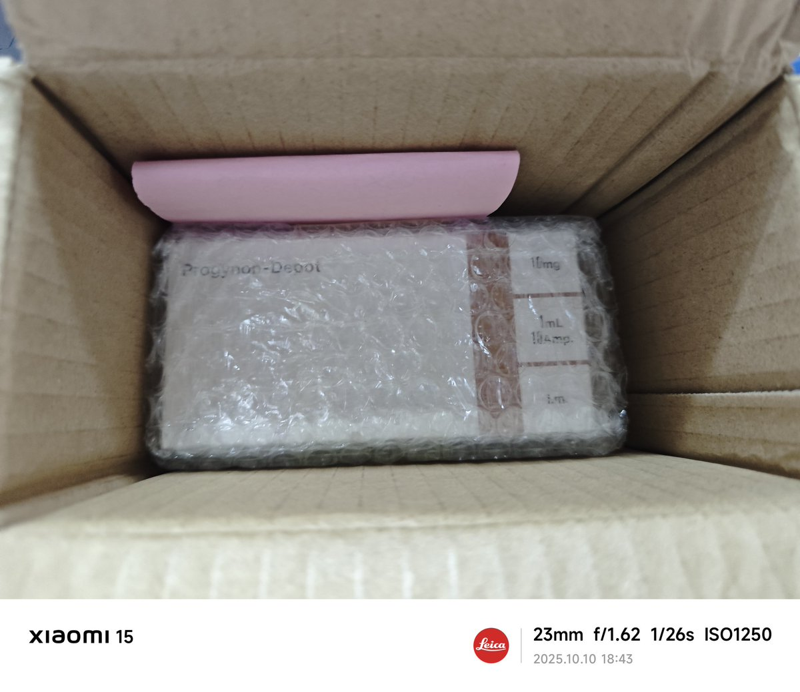
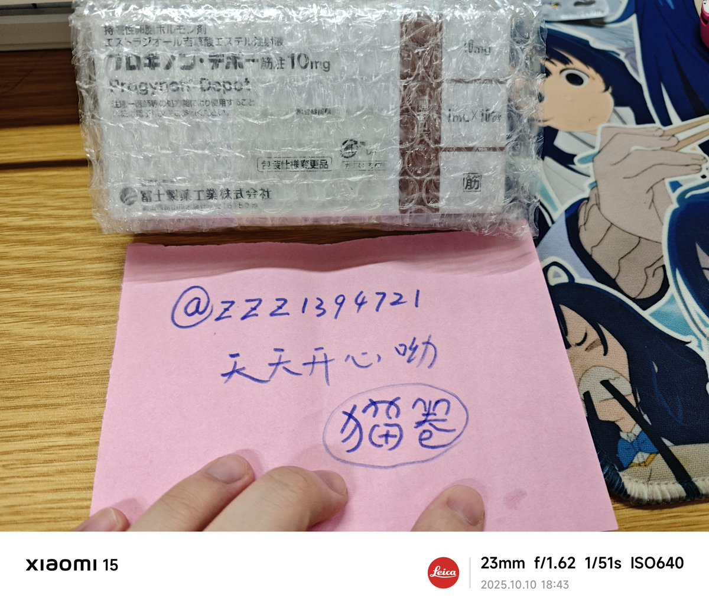

Suism.洛铃
@LolingVerse
0.大抵是10月初，13块的价格，入股了上海凤凰。
1.知道了猫卷，，，
2.大抵是从13多一路下跌到12.2，差不多也是池鱼鱼，也差不多是吴相泽的大头满天飞的时候
3.现在差不多已经14多块了，猫卷倒也不再提及cyy，发着也删着


薇尔莉特zzz🍥🏳️⚧️
@zzz1394721
@NekoMakiQAQ 在猫卷家买的日雌一天就到货了喵~也是我的第一盒日雌呢~买日雌找猫卷就对了喵~（手写信可爱喵） https://t.co/YKk3YproKN